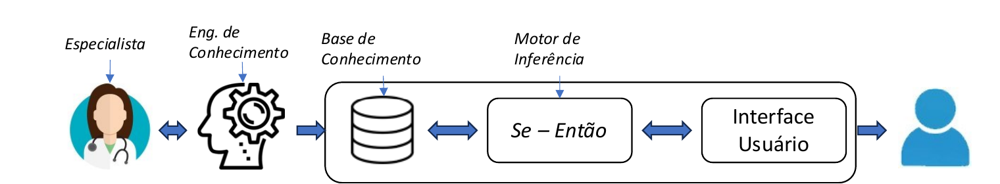

01Antes do aprendizado de máquina, havia regras
Muito antes de redes neurais e Deep Learning, a Inteligência Artificial já tomava decisões — só que de um jeito diferente: em vez de aprender padrões a partir de milhares de exemplos, ela recebia o conhecimento de um especialista humano, já pronto, organizado em regras e estruturas lógicas.
Representar conhecimento é traduzir o que um especialista sabe para uma linguagem que a máquina consiga usar para raciocinar.
Essa abordagem é chamada de paradigma simbólico: o conhecimento é representado por símbolos (palavras, regras, categorias) — não por números e pesos, como nas redes neurais. Para isso funcionar, é preciso resolver três problemas:
Identificar o conhecimento
Entender e modelar o problema: quais fatos, regras e critérios um especialista humano realmente usa para decidir?
Representar formalmente
Escolher uma linguagem — lógica, regras SE-ENTÃO, árvore de decisão — para escrever esse conhecimento de forma que o computador entenda.
Implementar a inferência
Construir o mecanismo que usa esse conhecimento representado para tirar conclusões e tomar decisões novas.
Diferente de uma rede neural, um sistema baseado em regras é transparente: dá para explicar exatamente por que ele chegou a uma conclusão. É por isso que essa abordagem continua sendo usada em áreas onde a decisão precisa ser explicável e auditável — crédito, saúde, direito, segurança industrial.
02Lógica: a base mais rigorosa
A forma mais formal de representar conhecimento é a lógica. Frases da linguagem natural viram proposições que podem ser verdadeiras ou falsas, e podem ser combinadas para se chegar a novas conclusões — exatamente como um raciocínio matemático.
Frases inteiras como unidades
Cada proposição é tratada como um bloco: "Chove" (P), "A rua está molhada" (Q). Combinações como P → Q (se chove, então a rua está molhada) permitem deduções simples.
Entrando no detalhe dos objetos
Permite falar sobre objetos, propriedades e relações: Cliente(x) ∧ Renda(x) > 5000 → Aprovado(x). É mais expressiva que a lógica proposicional, e é a base de muitos sistemas de regras.
Na prática, a maioria dos sistemas simbólicos usa uma forma simplificada de lógica: as regras de produção, no formato SE (condição) ENTÃO (conclusão) — fáceis de escrever, ler e explicar.
ENTÃO encaminhar_urgencia = verdadeiro Regra de produção — a unidade básica de um sistema baseado em regras
Vantagens e limitações
| Aspecto | Lógica / Regras de produção |
|---|---|
| Vantagem principal | Raciocínio transparente e rigoroso — cada conclusão pode ser rastreada e explicada passo a passo. |
| Boa para | Domínios bem definidos, com regras claras e conhecidas (ex.: regulamentos, protocolos clínicos, políticas de crédito). |
| Limitação | Difícil manutenção em larga escala — centenas de regras podem entrar em conflito ou se tornar difíceis de gerenciar. |
| Limitação | Não lida bem com incerteza ou exceções não previstas nas regras originais. |
03Árvores de decisão: regras organizadas visualmente
Uma árvore de decisão é uma forma de organizar uma sequência de perguntas SE-ENTÃO em uma estrutura hierárquica. Cada nó interno é um teste sobre um atributo; cada ramo é uma resposta possível; cada folha é uma decisão final.
Cada caminho da raiz até uma folha é, na prática, uma regra SE-ENTÃO: "SE renda > R$4.000 E histórico limpo, ENTÃO aprovar". A árvore só organiza visualmente várias dessas regras.
Como a árvore é construída
Diferente das regras escritas à mão por um especialista, árvores de decisão costumam ser aprendidas automaticamente a partir de dados históricos — é um dos pontos de encontro entre o paradigma simbólico e o aprendizado de máquina. O algoritmo escolhe, a cada nó, o atributo que melhor separa os casos (por exemplo, quem pagou e quem não pagou o crédito), usando medidas como ganho de informação ou entropia.
Árvores de decisão continuam entre os modelos mais usados em ciência de dados justamente pela combinação rara de alta interpretabilidade (dá para desenhar e explicar a árvore inteira) com bom desempenho em muitos problemas tabulares — como aprovação de crédito, triagem de risco e diagnóstico.
| Aspecto | Árvore de decisão |
|---|---|
| Vantagem principal | Fácil de visualizar, interpretar e explicar — inclusive para quem não é técnico. |
| Boa para | Classificação e decisões estruturadas a partir de atributos claros (idade, renda, sintomas, medições de sensores). |
| Limitação | Pode "decorar" os dados de treino (overfitting) se crescer demais — por isso costuma ser podada ou limitada em profundidade. |
| Limitação | Sozinha, tende a ser menos precisa que conjuntos de árvores (florestas aleatórias) em problemas complexos. |
04Sistemas especialistas: regras em ação
Sistemas especialistas (SE) são programas projetados para reproduzir a capacidade de um especialista humano de resolver problemas em um domínio específico, como medicina ou finanças (Lucas & Van Der Gaag, 1991). Eles são a aplicação mais completa do raciocínio baseado em regras.

👩⚕️ Especialista + Engenheiro de conhecimento
O especialista humano detém o conhecimento tácito. O engenheiro de conhecimento entrevista o especialista e traduz esse saber em regras formais — essa etapa é conhecida como aquisição de conhecimento, e costuma ser o gargalo mais trabalhoso do processo.
🗄️ Base de conhecimento
É onde as regras (SE-ENTÃO) e os fatos do domínio ficam armazenados — separados da lógica de raciocínio, o que permite atualizar o conhecimento sem reescrever o programa inteiro.
⚙️ Motor de inferência
É o componente que efetivamente "pensa": ele cruza os fatos apresentados com as regras da base de conhecimento e vai encadeando conclusões até chegar a uma resposta.
💬 Interface com o usuário
Recebe as informações do usuário (sintomas, dados financeiros, medições) e devolve a conclusão do sistema — muitas vezes junto com uma explicação do raciocínio seguido.
Duas formas de encadear regras
Forward chaining
Parte dos fatos conhecidos e aplica regras até chegar a uma conclusão. É como ir juntando pistas: "sei que X e Y são verdade, quais regras se aplicam? Então Z também é verdade."
Backward chaining
Parte de uma hipótese a testar e busca, de trás para frente, quais fatos precisariam ser verdadeiros para sustentá-la. É como um investigador testando uma suspeita específica.
O jogo Akinator é, na essência, um sistema especialista: uma sequência de perguntas SE-ENTÃO (encadeadas por uma extensa base de conhecimento sobre personagens) que vai estreitando as possibilidades até "adivinhar" quem você está pensando.
Raciocínio Baseado em Casos (RBC): o primo próximo
Uma variação interessante dos sistemas baseados em regras é o Raciocínio Baseado em Casos: em vez de aplicar regras gerais, o sistema busca na sua "memória" um caso passado parecido com o problema atual e adapta aquela solução (Richter & Weber, 2013). O primeiro sistema desse tipo, o Cyrus, foi criado por Janet Kolodner em 1983. A lógica por trás é simples: problemas parecidos tendem a ter soluções parecidas, e os tipos de problema tendem a se repetir.
05Da teoria à prática: três domínios clássicos
Os mesmos três blocos — fatos, regras, motor de inferência — reaparecem em situações reais bem diferentes entre si. Veja como cada exemplo pedido se encaixa no que vimos.
🩺 Triagem de sintomas
Um sistema de triagem médica decide, a partir de sintomas relatados, qual o nível de urgência de um atendimento — um dos usos mais antigos e conhecidos de sistemas especialistas (o pioneiro histórico foi o MYCIN, criado na Universidade de Stanford nos anos 1970, para sugerir tratamentos de infecções bacterianas).
ENTÃO prioridade = emergência
SE febre = leve E falta_de_ar = não
ENTÃO prioridade = consulta_agendada Exemplo simplificado de regras de triagem — sistemas reais combinam dezenas de regras e, com frequência, pesos de incerteza
💳 Aprovação de crédito
Bancos e fintechs usam árvores de decisão e regras para decidir se aprovam um crédito, combinando renda, histórico e outros atributos. A grande vantagem aqui é a explicabilidade: por exigência regulatória, muitas instituições precisam justificar por que negaram um crédito — o que uma árvore de decisão ou um conjunto de regras consegue fazer com clareza, diferente de um modelo "caixa-preta".
🔧 Diagnóstico de falhas
Sistemas especialistas industriais ajudam técnicos a diagnosticar falhas em máquinas e equipamentos, cruzando sintomas (ruídos, temperaturas, códigos de erro) com uma base de conhecimento construída a partir da experiência de engenheiros seniores — preservando esse conhecimento mesmo quando o especialista se aposenta ou muda de empresa.
Triagem de sintomas
Fatos: sintomas relatados pelo paciente
Regras: protocolos clínicos
Saída: nível de prioridade
Aprovação de crédito
Fatos: renda, histórico, dívidas
Regras: política de risco do banco
Saída: aprovar / negar / analisar
Diagnóstico de falhas
Fatos: sintomas da máquina
Regras: experiência de engenheiros
Saída: causa provável da falha
06Lógica, árvore ou sistema especialista?
As três abordagens são complementares — muitas vezes um sistema especialista real usa lógica de regras e uma árvore de decisão internamente. Ainda assim, é útil saber quando cada uma se destaca:
| Abordagem | Ponto forte | Quando usar |
|---|---|---|
| Lógica / Regras | Rigor e transparência total | Conhecimento já bem definido em normas, protocolos ou políticas |
| Árvore de decisão | Aprende sozinha a partir de dados e é fácil de visualizar | Há uma base de dados histórica com exemplos de decisões passadas |
| Sistema especialista | Formaliza e preserva conhecimento tácito de especialistas | O conhecimento existe só "na cabeça" de profissionais experientes |
Roteiro rápido para decidir
- Existem dados históricos suficientes e rotulados? Considere uma árvore de decisão (ou algoritmos derivados, como florestas aleatórias).
- O conhecimento está apenas na experiência de especialistas humanos, sem uma base de dados pronta? Vale a pena investir em um sistema especialista, com entrevistas de aquisição de conhecimento.
- A decisão precisa seguir normas ou regulamentos rígidos, auditáveis por lei? Prefira regras lógicas explícitas, mesmo que mais trabalhosas de manter.
- O problema envolve muita incerteza ou dados incompletos? Vale complementar com representação probabilística (redes bayesianas, lógica difusa) — um paradigma vizinho a este.
O que fica desta aula
Representar conhecimento é transformar o que um especialista sabe em algo que uma máquina consegue usar para raciocinar — e o paradigma simbólico faz isso com lógica, regras e árvores de decisão.
- Lógica e regras de produção (SE-ENTÃO) oferecem o raciocínio mais transparente e rigoroso que existe em IA.
- Árvores de decisão organizam essas regras visualmente e, com frequência, são aprendidas automaticamente a partir de dados.
- Sistemas especialistas combinam base de conhecimento e motor de inferência para reproduzir, de forma explicável, a tomada de decisão de um profissional experiente.
- Os três aparecem juntos, na prática, em triagem de sintomas, aprovação de crédito e diagnóstico de falhas — sempre que a explicabilidade da decisão importa tanto quanto seu acerto.
07Para explorar depois da aula
- Leitura complementar: Russell & Norvig, Artificial Intelligence: A Modern Approach — capítulos sobre lógica e representação do conhecimento.
- Referência histórica: Lucas, P. & Van Der Gaag, L. (1991) — sistemas especialistas em medicina e finanças.
- Raciocínio baseado em casos: Richter, M. & Weber, R. (2013); Kolodner, J. (1983) — o sistema Cyrus.
- Experimente: Akinator — um sistema especialista disfarçado de jogo.